SPECIFICALLY ABOUT THE IN GAME WORLD !!!
(Pretty much a condensed enclosed lore book)
P.S.: If you want to learn how to PLAY the game check here.
GAMEPLAY
YOU SHOOT SH!T! (figuratively and sometimes quite literally) being attack by garbage zombies
and you just want to get home for your birds' sake!
Or else your world Would be just another garbage dump!
UNDERACTING STORY AND SETTING
Welcome to the Motherland of the post Socialist State Of Sociania !
(your universes Australians' state of Victoria and Tasmania)
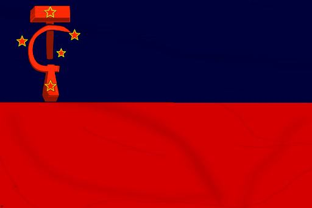
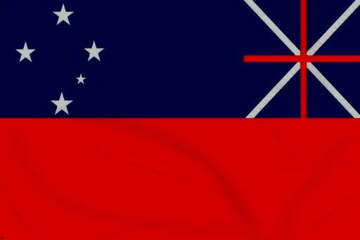
Here, an Germanic-English man called Ushank, UShank Mann, who has came
here for the beer (and not much else).
TOO BAD HE GETS TELEPORTED TO CROWSKULL!!!! You know? on the other side
of the country?!? in the middle of the Socianian Outback! also, its the
fact, that the Trash Heads have launched an invasion not yet seen in this world!
and its YOUR job to help him! Ushank from his eyes. you have fight and crawl
through de-industrialized towns and cities, shooting at anything that attacks!
you'll need armor, ammo, and most off all, a lotta vodka!
will he succeed, or be hung up in a hangover??? That's your decision in
this nostalgia fueled Ozjank experience!
OVERARCHING STORY
what began as basic need for survival soon turn into a conflict that have decimated
a million worlds, the Trash Head have Fought valiantly to drain the resources
of several galaxies, crippling anyone who stands between them beyond repair.
their hatred fueled by over 40 years of supremacy from their commanders and
their leaders lustfully eying off the Other Side.
this is a war of the worlds.
the only acceptably outcome is the total annihilation of the Other.
FACTIONS
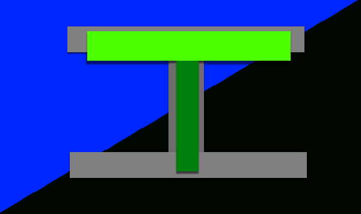
THE TRASH HEADS
They are conniving bunch of interdimensional mutants and machines. their army reaches in the billions, just on the nuclear hellscape that they used to be called earth. with little regard for life, both human and alien, they will use their overwhelming forces to crush any resistance to their rules. The leaders of the Trash Heads are General Secretary Brushav, and the elusive
D.O.A.W.Y.
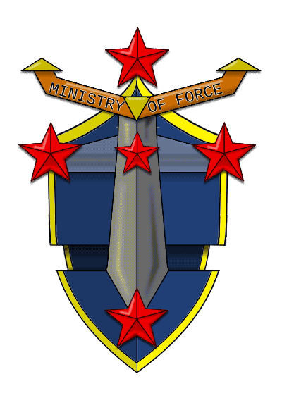
THE MINISTRY OF FORCE
The wide (some would call stretch out) collection of the Socianian Republic's Army, Air Force and Navy. Due to downsizing during the 90s and 2000s they become a small, albeit very well trained and experience Defence force, and are therefor to be reckoned with, if you get on their bad side. They're currently looking for volunteers to help them in the war with the Trash Heads, so sign up at your nearest local recruitment station today!
We Want You!
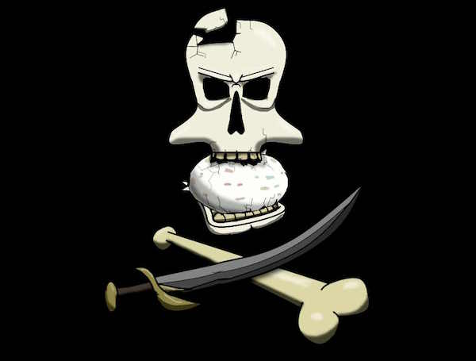
GOPSTOP RANGERS
a loose cannon group of pirates and thugs involved in the illegal underground "sugar" trade. and also bartering dishwashers and washing machines. they love drinking partying and most of all, robbery and kidnapping. it is unkown how small or large their faction is, but it is known that they won't go down without yelling about how they are on top like a king in a game of draughts. Their leading figure is only known as Shineless Tom. presumably a man with no shins.
CHARACTERS
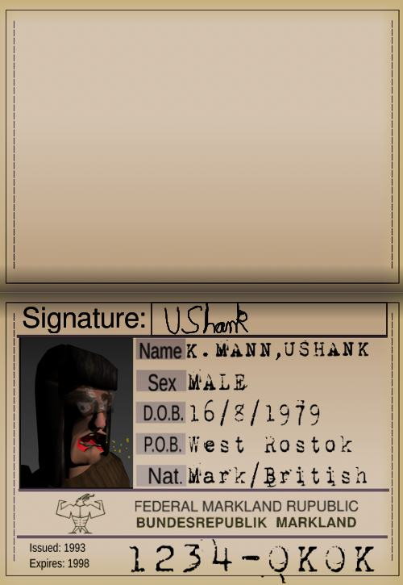
Ushank is a regular Joe (simple minded) with a regular Job (carpentry), he's average white, ruralite slob, he likes drinking and gaming and books about war. he has a ROAF house, with a nice Hardwood floor. his bird (Johnny), his kid (William) and his car (Libby). his feet on his table, and a cuban cigar!
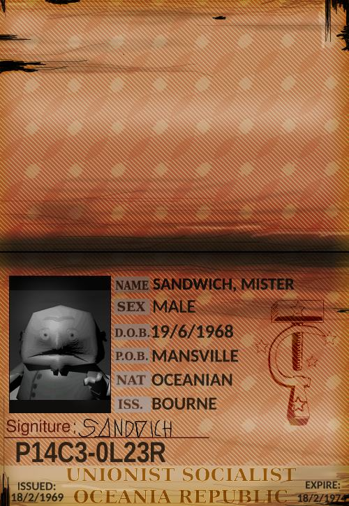
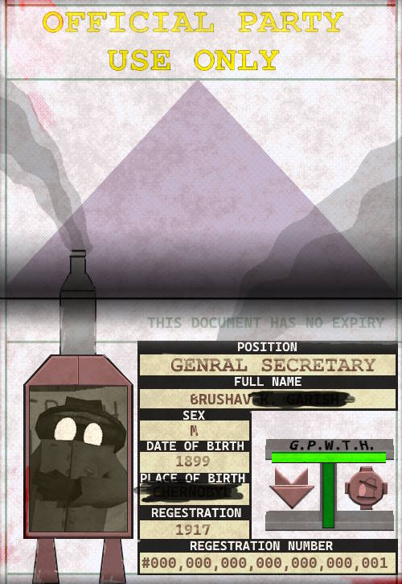
A mysterious, yet omnipresent leading figure for the Trash Heads. He is the General Secretary Brushav, and is, and (probably) forever will be. A spokesperson for the D.O.A.W.Y. and huge fan of authoritarianism, his voice booms riling up his TRUE COMRADES and disparaging the traitors. he doesn't give up. he doesn't forgive. He doesn't forget. It wouldn't surprise me if he doesn't care. But what is know for certain is that he'll go to any length to keep the D.O.A.W.Y. content.
MOBS/MOOKS
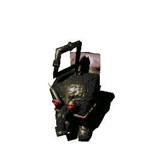
Health: 5
Attack: light kick
IMP; Above is the debug life cycle of the humble Imp native to south-east Australia their life span is quite short, a mere 5 seconds, upon which they will reflect on their meagre existence before returning to the clay of the earth as a pancake
-Luctech description
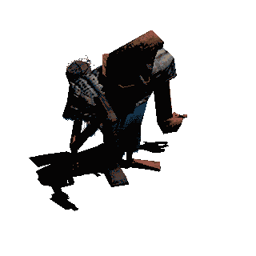
Health: 30
Attack: Hammer Whack
WORKERS are a tragic creature and one of the most evidence of the hypocrisy of the Trash Heads, who preach workers and workers rights as a core pillar for the regime! but they force actual workers to work 12 hour workdays with no breaks between, chained up at their workstation. they do get a complementary ciggy tho. Which makes them even worse cause of lung diseases! OK this is getting a bit too real about a silly game about a man-in-a-hat!
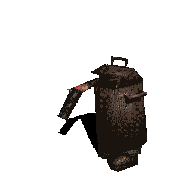
Health: 50
Attack: Cannon blast
ROCKETEERs have been around since garbage day, they're quite tanky light infantry unit and are equipped with a cannon that shoots out a slow, but hard hitting TH-Projectile, the voice boxes of these units have been servery damaged by the radiation of TWOTH Peoples Republic and therefore can only yell like a banshee.
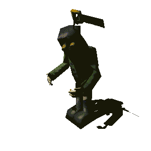
Health: 25 - 40
Attacks: 3* Buckshot pellets, loogrenades toss
BASICs or The "Biological Augmented Standard Interdimensional Conscript" like the acronym suggests is a basic foot solider that are unbridged to solely serve the Trash Heads Army for grunt work. They arn't using the brightest tools in the shed, but do pack quite a punch when the tools actually work.
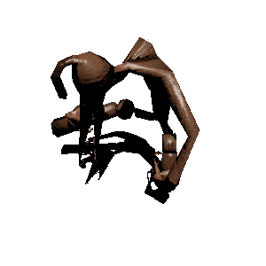
Health: 80-120
Attack: Leg Cannon blast
Special: Blast Jack Jump
PILOT. Oh no! Its a mutated cassowary cross human hybrid! simply known as Pilots for flying all manner of magnificent flying machines, their shins have been cutoff from the rest of their body for blood circulation and armory to better help fly.
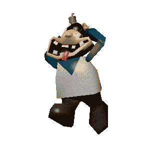
Health: 10
Attack: Self Explode
WAL CLONES. these are a Clone of a mad man named Walter J. Bologna, Who during his long life worked as a Toon and a spy. since there inception they want nothing more to play volleyball, which they will explode from excitement when they find a pure human (i.e. not a Trash Head) to play with. doesn't help the volleyball is a Chinese bomb.
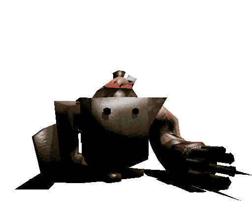
Health: 250
Attacks: Rapid cannon blast, Charge
GIGAS are a Gargantuan Chads (at least to imps) which are a powerful standard infantry unit that strikes fear in most who meet them. and who should! Their kinda c@nts! Also depite their overwieght, they are quite Quick when they fell like it. Their loyalty only lies between themselves and the D.O.A.W.Y.!
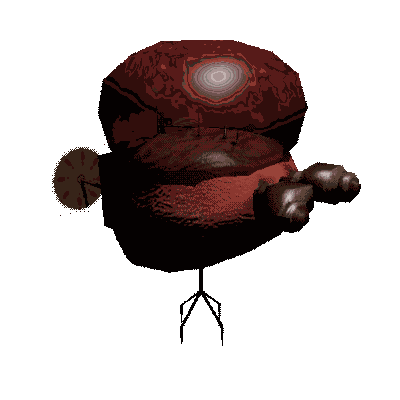
Health: 100
Attacks: SH!T Barf, SH!T sh!t
Special: hovers around, and explodes into Little Craps on death
CACADEMONS, Other then planes and rigid airships, this is the most common air unit of the Trash Head Air Force. They were an experiment in waste disposal, as in they hardly waste anything when they eat, as in THEY ARE MADE OF FECES! YEP! it isn't CacoDemon! its CacaDemon!
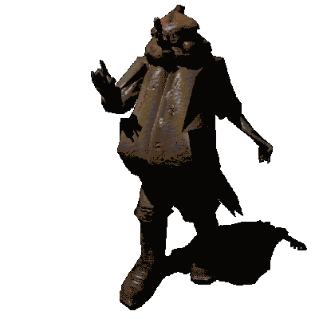
Health: unknown
Attack: Sniper
Special: Teleports when Threaten
ZOMBIE VETERAN SNIPER is a HUGE (fat) veteran of the first world war and is allied with the trash heads, for their apparent hatred of the germans. with a parasite in his eye and a glint in the other he will snipe and smite any who appose the law(s of the Trash Heads). He is just following orders afterall...
WEAPONS
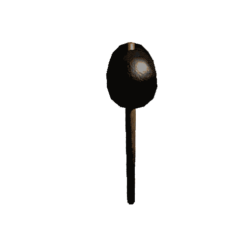
damage: 14ammonRate:none
ammoTotal: infinite
Range: melee
USHANKS SIGNATURE WEAPON! A rubber mallet. colloquially known as a Hammer, is a hammer made in the republic of china, with hammers, you hammer people with it, whilst Ushank is getting hammered. H A M M E R !
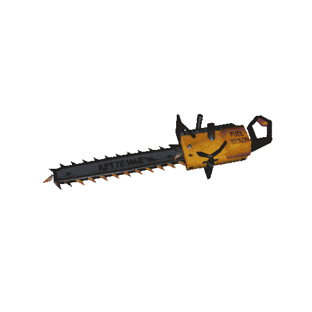
Damage: 7 per secondRange: melee
ammoRate: 2 fuel per second
ammoTotal: 100 fuel
KETTENSÄGE - DER GROSSE KOMMUNIKATOR! A East German 2-stroke chainsaw that can cut through both wood and flesh, perfect for barackades, and dissidents... so anyway:
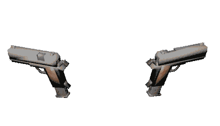
damage: 5 per bulletammonRate:1 per shot
ammoTotal: 8(mag sized) / infinite
Range: medium ranged projectile
notes: can be akimbo to double firerate and mag size
PISTOLS! a standard police and guard gun based on a popular .45 cal varient, this smaller calibra sidearm is equipted with an unlimited amount of techno magic ammo of poor quality, but who cares if its for gameplay reasons?
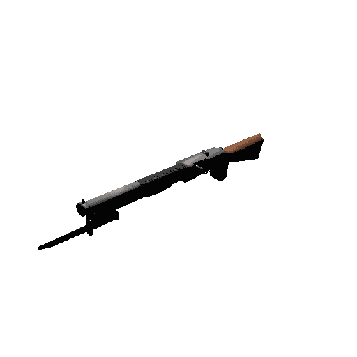
damage: 5 per 7 pelletsammonRate: 1 per shot
ammoTotal: 100 shells
Range: medium ranged projectile
notes: Has a large Spread Range
NORMAL SHOTGUN! Also known as a trench broom from its WW1 days, is a pump action firearm that made the pyromaniac germans angry. It firerate is much faster to reload then then YER DOUBLE BARRELED SHOTGUN, but shoots less pellets.
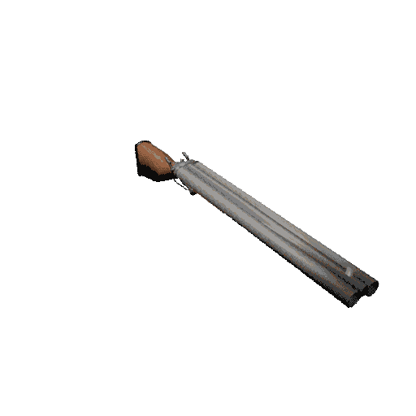
damage: 5 per 14 pelletsammonRate: 2 per shot
ammoTotal: 100 shells
Range: medium ranged projectile
notes: Has a large Spread Range
YER DOUBLE BARRELED SHOTGUN! a early 20th century breach action scattergun with a 2 shell total capacity. What makes this better then the NORMAL SHOTGUN? Less regulation. Also more power per shot, for tankey mooks. It's a favorite of hobbyist badass enthusiast, and bandits.
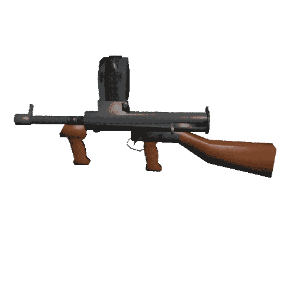
damage: 7 per 1 shot
ammonRate: 4 per second
ammoTotal: 100 bullets
Range: medium ranged projectile
notes: Has a mild Spread Range
OWEN GUN is a WW2 gun originally made by Private Evelyn E. Owen in the Commonwealth, designed in a garage, manufactured in a local steel plant. It was notable for reliability, greater then other contemporary guns like the tommy, and the sten. Even General MacArthur was apparently impressed. This is all True by the way!
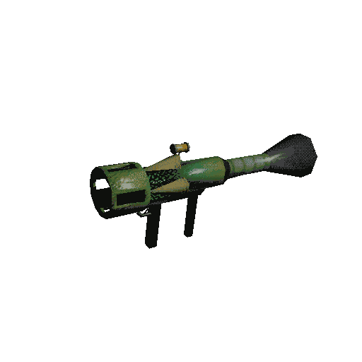
damage: 50 explosion damage in a 7m radiusammonRate: 1 per shot
ammoTotal: 10 rockets
Range: long ranged, slow moving rocket
notes: sets things on fire
RPG BAZOOKA! It might look like a gag instruments, but don't be fooled, this is a dangerous recoilless rocket propelled incendiary grenade launcher, with a high damage output and the ability to take out light tanks with ease. Perfect for rocket jumping
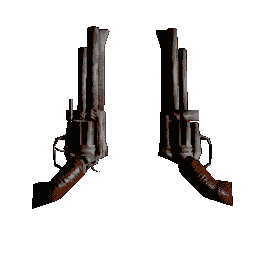
Damage: 20 per shot
ammoTotal: 6(mag sized) / 64 Rifle Rounds
range: long, but gets wider on short subsequent shots
notes: can be akimbo to double fire-rate and mag size
RANGER CORNET REVOLVERS! a standard issued sidearm for the Military for its superotor firepower and range, the design has been around since the cowboys, but still is a reckon to be weaponed with.
notes: ALTERNATE LUDICROUS SMOKEY SPLODEY FISH MODE!!!
SALMONATOR! a Funky Fish, that fires... more fish... pretty clear that it doesn't make sense since its made by LUCTECH, a mysterious arms and hardware manufacturer, with accompanying software, and IS NOT an art studio. yeah. It is also alive and can be fired with an explosive secondary mode when it is given a cigar.
ITEMS

type: carry item
effect: tops off health or whatever left in the bottle when used, increase alcohol levels
POTATO VODKA a cheap highly concentrated bottle of alcohol, gives you a percentage
of health based on the remainder of your total health
(E.G. 100 vodka & 70 Health = +30 Health and 70 vodka)
basically its a medkit from Duke 3D. and of course it gets you drunk!
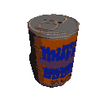
type: carry item
effect: grants 10 health when used, increases alcohol levels
MUFF BEER is one of the most historic industries of the Sociania Republic, being around since 1860, although it meant something else back then... grants goodness when drunken,
so drink up and up!
(MUFF BEER HAS REPORTS OF FRENCH STRIKNINE IN IT, THIS IS LEGALLY FALSE)
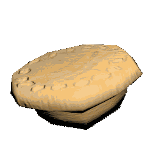
type: carry item
effect: grants 10 health when used, decreases alcohol levels
A PIE FLAVORED PIE! actually its just chicken. now obviously in your perfect world it won't decreases your alcohol levels. but this is not a perfect world.
its a post soviet sh!thole being invaded by a literal sh!thole!
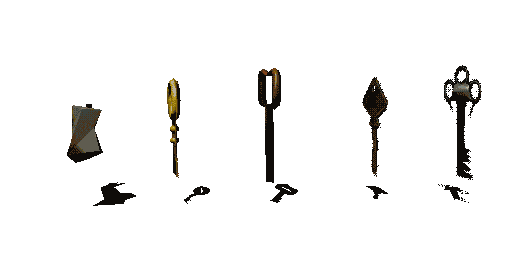
type: temporally key item
effect: unlocks locks and key doors when used
temporally as in they don't persist between levels. also comes in hot dog flavor!

type: pickup
effect: grants health when walked into(10 for small, 30 for big)
A medkit provided by The Ministry of Health! Full of mysterious ointments and liquids! to the left some bandages.

type: pickup
effect: grants armor when walked into(10,25,and 50)
standard outfits from and for the Ministry Of Force including a kevlar sun hat, a Armored helmet and chest piece,
they're for State use only... doesn't stop civvies like you from wearing them...
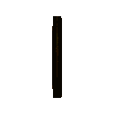
type: point pickup
effect: grants 100 points
a simple coin, minted together with the mysterious element F100 (a metal substitute that has the side effect of making things, err, float!) its only worth a nickle and a dime!
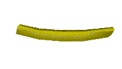
type: pickup
effect: grants health when walked into(1 per chip)
A french fried chip from HUNGAR WORLD™* burger restaurant also minted together with element F100!!(??) it does taste nice but is terrible for long term health effects... but you and I will eat it anyway!

type: point pickup
effect: grants 5000 points
LODS OF EMONE!

type: point pickup
effect: grants 20000 points
Mined from a old grizz called Les, molded together with a southbound Pachyderm and jerry. who was a race car driver.
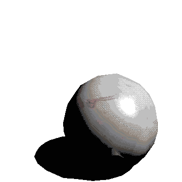
type:power up
effect: increased walk and run speed for 30 seconds
JAWBREAKER! or GOBSTOPPER! Is a disgusting head sized sugary candy that you lick at,
or suck. Yuck! their plentiful due to the black market flooding the country with
millions of them!
And who is the distributor? The Gopstop Rangers of course!
VECHILES
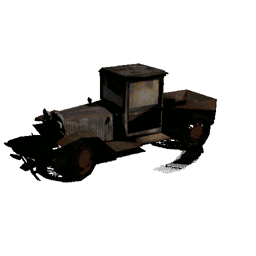
THIS is a BASH Model Я!
it was a 5 door sedan made in communist South Oceania.
manufactured in 1930s to the 1950s by the Bourne Auto South House,made from a soviet, from a soviet, from an american blueprint rigidified for the unurbanised market. This exact line of vehicles was known for reliability and repairability. though never popular abroad, due to patent infringement, it was relativity unchanged for 20 odd years.
this exact car is has been modified into a 2 door utility vehicle with a wooden tray and is affectionallity named "Libby" by its owner, Mr. Ushank Mann.
The car is powered by a 40 horsepower, 4-stroke, inline 4 cylinder engine using rear-wheel drive with a top speed of 100km per hour. Although it never really reaches That level.
AREAS
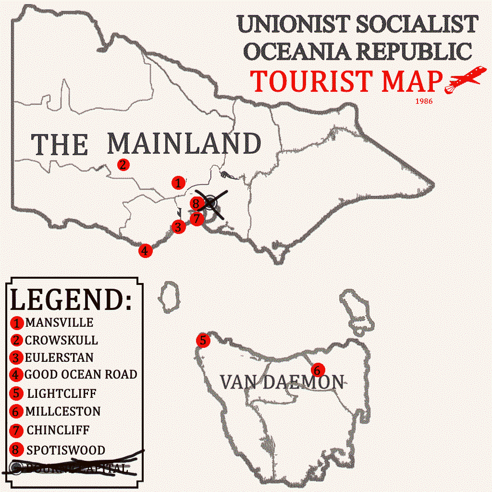
not pictured; The World Of the Trash Heads.